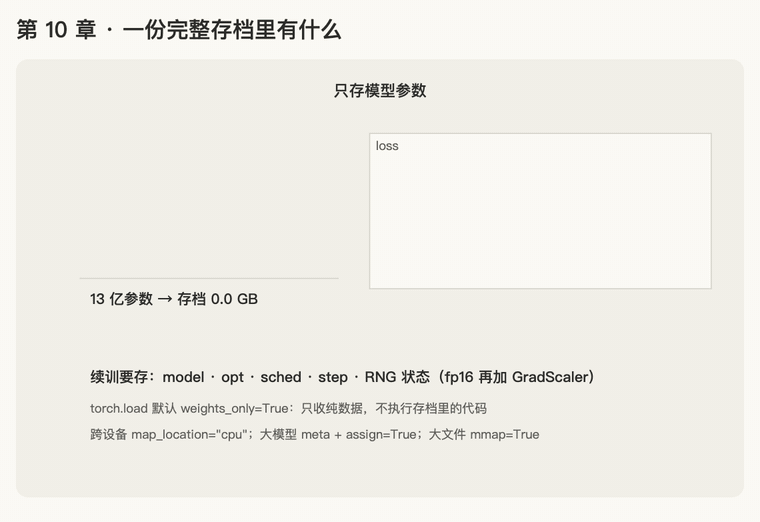

第 10 章 · 保存与加载：存清单、不存对象，断点要存全
本章回答：模型应该怎么存？为什么不建议
torch.save(model)？weights_only防的是什么？断点续训除了参数还要存什么，一共多大？
讲解日期：2026-11-14 · 上一章：第 9 章 训练循环 · 下一章：第 11 章 形状与广播
对应原文：00-overview.md §3；官方教程「Saving and Loading Models」与torch.load文档（〔在线〕）；本章数字在本机 torch 2.15.0 上跑过本章缩写：ckpt = checkpoint（检查点 / 存档）；RNG = Random Number Generator（随机 / 数 / 生成器）；FQN = Fully Qualified Name（完整 / 限定 / 名）；全部缩写见 附录 · 缩写与术语表
讲解
第一步：存 state_dict，不存整个对象（2026-11-14）
第 7 章说过，state_dict 是"名字 → 张量"的清单。推荐的存法就是存这张清单：
torch.save(model.state_dict(), "model.pt")
model = MLP() # 先用代码把结构建出来
model.load_state_dict(torch.load("model.pt")) # 再把数填进去
类比：搬家。 存 state_dict 像拍下每个抽屉里放了什么（清单）；到了新家先按图纸打好柜子（代码建模型），再照清单放东西。torch.save(model) 像把整个柜子连同"柜子是哪家工厂哪个型号"一起打包：到了新家如果那家工厂改了型号（你改了类名、挪了文件），柜子就拆不开了。
load_state_dict 默认严格对名字（strict=True）：
model.load_state_dict(sd) # <All keys matched successfully>
sd.pop("fc2.bias")
model.load_state_dict(sd, strict=False) # _IncompatibleKeys(missing_keys=['fc2.bias'], unexpected_keys=[])
strict=False 不报错，但会返回缺了谁、多了谁。微调换了输出头时常用它，但一定要看返回值，别让关键层悄悄没加载上。
一句话：存清单不存对象；加载时先建结构再填数，名字对不上看 missing / unexpected。
第二步：weights_only——不让存档文件执行代码（2026-11-14）
torch.save 底层用 Python 的 pickle（腌制，Python 的通用序列化格式）。pickle 有个危险特性：加载时可以执行任意代码。别人发来的 .pt 文件，加载一下就可能删你的文件。
从 PyTorch 2.6 起，torch.load 默认 weights_only=True：只允许加载张量、数字、字符串、字典、列表这些"纯数据"，遇到别的东西就拒绝。
实测：存一个加载时会执行 print 的对象，再加载：
torch.load("evil.pt")
# UnpicklingError: Weights only load failed. ...
被挡住了。自己存的、确定安全的文件需要加载自定义对象时，才用 weights_only=False。
另一个选择是 safetensors 格式（Hugging Face 推出）：文件里只有张量和一个 JSON 头，根本没有代码可执行，还能按需只读一部分（内存映射）。下载别人的模型时优先选 .safetensors。
一句话：pickle 能执行代码，weights_only=True（默认）只收纯数据；外来模型优先 safetensors。
第三步：断点续训要存什么、有多大（2026-11-14）
训练跑了三天断了，想从断点接着跑、结果和没断过一样，只存模型参数不够：
| 要存的 | 为什么 |
|---|---|
model.state_dict() |
参数 |
opt.state_dict() |
AdamW 给每个参数记了两个"动量"（exp_avg、exp_avg_sq）和步数，丢了就等于重新热身 |
sched.state_dict() |
学习率走到哪了 |
step / epoch |
从第几步接着 |
| RNG 状态 | torch.get_rng_state()、torch.cuda.get_rng_state_all()：保证 dropout、数据打乱接得上 |
| GradScaler（fp16 时） | 当前的缩放倍数 |
| 数据位置 | 读到哪个 batch（或用 step 推出来） |
数字演示（实测）：nn.Linear(1000, 1000)，约 100 万个 float32 参数：
| 内容 | 大小 |
|---|---|
| 模型 state_dict | 4.0 MB（100 万 × 4 字节） |
| AdamW state_dict | 8.0 MB（两份动量，各和参数一样大） |
所以 AdamW 存档 ≈ 参数的 3 倍。7B（70 亿）参数的模型，float32 存参数 28 GB，加 AdamW 共约 84 GB。大模型通常每几百步存一次，只保留最近几份。多卡时每张卡只存自己那一片（第 22 章 DCP）。
torch.save({"model": model.state_dict(), "opt": opt.state_dict(), "sched": sched.state_dict(),
"step": step, "rng": torch.get_rng_state()}, f"ckpt_{step}.pt")
一句话：续训要存模型 + 优化器 + 调度器 + 步数 + 随机数状态；AdamW 存档约是参数的 3 倍。
第四步：加载的三个实用开关（2026-11-14）
| 情况 | 写法 |
|---|---|
| 在 GPU 上存的，要在 CPU / Mac 上加载 | torch.load(path, map_location="cpu") |
| 模型很大，不想先随机初始化一遍再覆盖 | 在 meta 上建结构（第 3 章），load_state_dict(sd, assign=True) 直接用存档里的张量 |
| 文件很大，不想一次全读进内存 | torch.load(path, mmap=True)：按需从硬盘读 |
存 view 的小坑：torch.save 存一个 view 时，会把它背后整个 storage 都存下来（第 2 章）。从一个大张量切一小块存盘，文件可能出奇地大；先 .clone() 就只存这一小块。
一句话：换设备用 map_location，大模型 meta + assign，大文件 mmap；存切片前先 clone。
动画演示：一份完整存档里有什么

可交互版：animations/10-checkpoint.html。滑块调参数量；开关"只存模型 / 存全套"。
怎么看：
- 左边柱子是存档的组成：模型参数、AdamW 两份动量、调度器和随机数（很小）；
- 下面是训练曲线：第 600 步断了；"只存模型"时从断点重启，loss 先往上跳（优化器动量和学习率都丢了），"存全套"时曲线无缝接上；
- 滑块改参数量，看存档大小按"参数 × 12 字节"增长。
练习与作答记录
题 1：同事用 torch.save(model, "m.pt") 存模型，半年后把模型类改了名字，加载失败。为什么？应该怎么存？
作答：（待作答）
题 2：一个 1.3B（13 亿）参数的模型，float32 参数 + AdamW 状态，存档大约多大？
作答：（待作答）
题 3：断点续训只存了 model.state_dict() 和步数，接着训会有什么问题？至少还要补存哪两样？
作答：（待作答）
口诀
存清单不存对象，先建结构再填数；
pickle 会执行代码，weights_only 只收纯数据；
续训存全套：模型、优化器、调度、步数、随机数，AdamW 存档三倍大。
本章复习卡片
- P31（存 state_dict 不存对象；strict=False 返回 missing / unexpected）
- P32（weights_only=True 默认：pickle 可执行代码；safetensors）
- P33（续训存什么；AdamW 存档 ≈ 参数 3 倍：1000×1000 Linear 4 MB + 8 MB）
附录 · 延伸阅读
推荐阅读
| 读什么 | 读哪里 | 读它为了什么 |
|---|---|---|
| ★ 官方教程「Saving and Loading Models」 | 全文（〔在线〕） | state_dict、checkpoint、跨设备加载 |
★ torch.load 文档 |
weights_only、mmap、map_location 参数（〔在线〕） |
第二、四步 |
| safetensors 文档 | 「Speed comparison」「Metadata parsing」（〔在线〕huggingface.co/docs/safetensors） | 为什么安全、为什么快 |
| Ultra-Scale Playbook | §Weights/grads/optimizer states memory（distributed-pretraining/materials/text/ultrascale-playbook.md 第 270 行起） |
参数、梯度、优化器状态各占几倍（第 19、27 章再用） |
数学原理
- AdamW 状态：每个参数存一阶动量 \(m\) 和二阶动量 \(v\)，各一个 float32，所以优化器状态 \(= 2 \times 4 = 8\) 字节 / 参数；加上参数本身 4 字节，存档 ≈ 12 字节 / 参数。
公式清单
| 写法 | 意思 |
|---|---|
torch.save(obj, path) / torch.load(path, weights_only=True) |
存 / 取 |
load_state_dict(sd, strict=False, assign=False) |
填参数 |
map_location="cpu" / mmap=True |
换设备 / 按需读 |
| 存档 ≈ 12 字节 × 参数量 | float32 + AdamW |
代码对照：把本章的数字用代码算一遍
用 torch 把讲义里的数字跑一遍。代码在仓库本地
pytorch-deep-dive/solutions/chapter-code/ch10_save_load.py，配套测试tests/test_ch07_15.py；同一章的 notebook：notebooks/ch10_save_load.ipynb（讲解和代码放在一起，一格一格边读边跑）。Mac 上直接能跑，不需要 GPU：
bash cd pytorch-deep-dive/solutions/chapter-code uv run python ch10_save_load.py # 一步一步打印 uv run pytest tests/test_ch07_15.py
讲义 ↔ 代码：
| 讲义 | 公式 / 说法 | 写法 | 跑出来 |
|---|---|---|---|
| 第一步 strict=False | 返回缺了谁 | strict_false() |
missing_keys=['1.bias'] |
| 第二步 weights_only | 挡住会执行代码的存档 | weights_only_blocks() |
UnpicklingError |
| 第三步 存档大小 | 参数 4 + AdamW 8 字节 | checkpoint_sizes() |
4.0 MB / 8.0 MB |
关键几行：
torch.save(model.state_dict(), path)
model.load_state_dict(torch.load(path)) # 默认 weights_only=True
sd.pop("1.bias"); m.load_state_dict(sd, strict=False)
代码里才看得到的 2 件事：
Evil.__reduce__就是攻击方式：pickle 加载时会调用它返回的函数，所以只加载可信文件。- AdamW 要先 step 一次才有状态：新建的优化器
state是空的，存档很小。
自己改一改（不影响练习答案）：
- 把
checkpoint_sizes(2000)，看大小是不是变成约 4 倍。 - 在
checkpoint_sizes里换成 SGD（不带 momentum），看优化器存档多大。